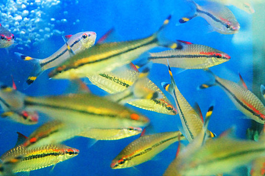
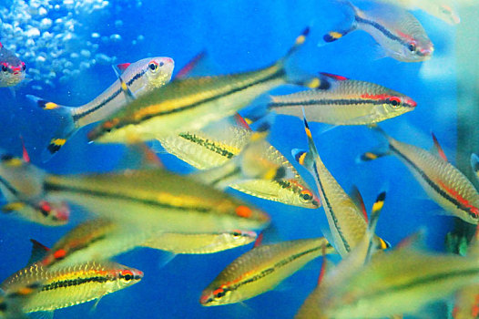
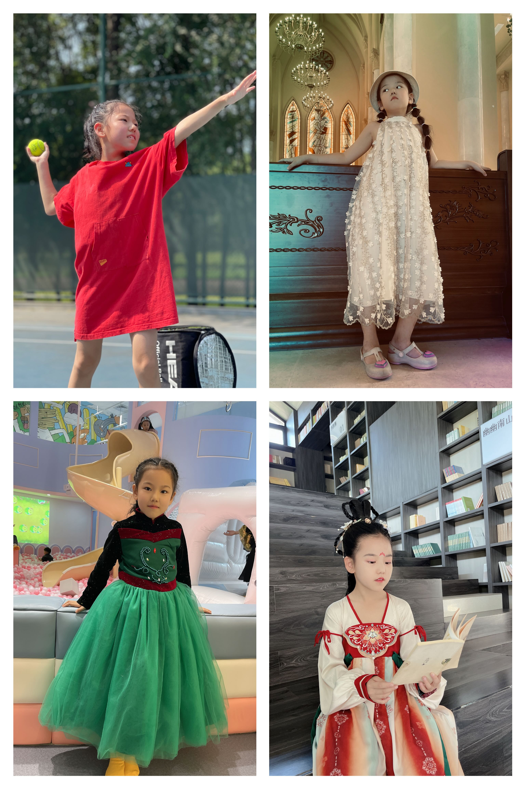
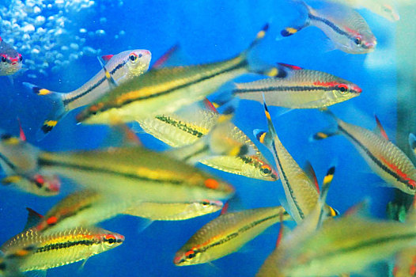

这是我的个人介绍：
我的家乡在郑州，我上三年级，有许多爱好，比如弹钢琴🎹、看书、打网球🎾······
我参加了一个帆船营。
下面我来给大家讲一讲我们这几天的趣事吧！ 我们这个帆船营分为两个小组，分别为A组和B组，我在A组，每个小组都有4个小朋友，A组在第一天下午与第三天下午出海，B组在第三天上午与第五天上午出海。 悄悄告诉你：我们轮流掌舵，风吹着船帆，我们的船就像游乐园的海盗船一样，左摇右晃，刺激极了！还有呢，在第三天下午出海时，爸爸给我了他的警察遮阳帽👒，我把它带在头上，不过在我升帆的时候，帽子却被风吹走了，它掉在海面上，漂啊漂啊，在海面上自由自在的旅行，它时而与海浪一起翻跟头、时而陪小鱼们玩躲猫猫、时而看水母穿不同颜色的舞裙👗跳舞。
